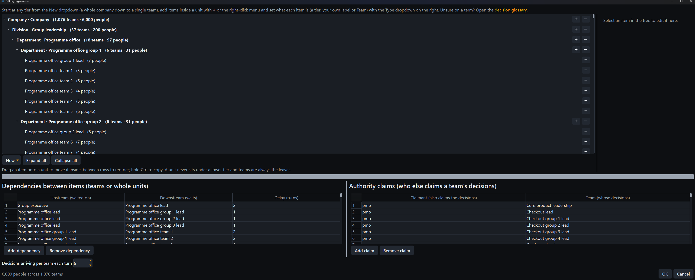

Fulcrum
FulcrumA model you can hold
Decision Architecture argues that organisations succeed or fail by their structure, not by effort. Fulcrum turns that argument into an engine you operate directly: the decision objects, authority worldlines and structural moves from the books, scored live by a deterministic model.
Structural moves
Delegate authority, stabilise interfaces, realign incentives, collapse a boundary or resolve a contested decision class to a single owner. Every move is scored from blunder to great.
Signals to watch
Handoff queue age, escalations, rework, influence without authority, contested ownership, centre escalation load and unowned interfaces: the lagging indicators, each with its own definition.
A guide for every level
The guide plans the whole hierarchy at once: each unit's line in its own frame, with the leaf lines composing into an honest whole-org climb, the way an engine shows its line at every depth. On a large organisation the planning spreads across every processor core, so an enterprise of thousands plans in seconds; the parallel build is deterministic and matches the single-core one to the last digit; every planning bar can be cancelled mid-build.
Yours, on your machine
Generate a level, model your own organisation, import one as JSON or open a built-in example, from a healthy small agency to a matrixed enterprise of six thousand people. There is no account and no server; nothing about you or your organisations leaves your machine, the one outbound call being an anonymous daily ask of GitHub's releases API for whether a newer Fulcrum exists. A light and a dark theme, remembered between runs, with the maps and the authority colours following.
A page for each part
The moves, the signals and the ideas
What you actually do with it: draw an organisation or open a shipped example, read its score out of 100, then play the moves legally open to you.
The page defines every move you can play from delegating authority to the matrix overlay, the signals you watch and the ideas underneath. The same definitions are in the app under Help, Decision glossary.
The board, the guide and the plan
The board scores an organisation and grades every move open to you; the guide plans every level of it at once, move by move.
The page follows the shipped matrixed enterprise of 6,000 people on the board and in the guide, then the self-contained HTML report a played line exports to, embedded as shipped.
Draw the org you actually have
A two-pane editor keeps the structure visible while you build it: units nest to any depth with teams as the leaves, with an inspector editing whatever is selected.

What grounds it, briefly
The score is a hand-tuned evaluation function, the same kind of thing a classical chess engine uses: an expert prior written as arithmetic. It is not a statistical model fitted to organisational outcome data: there is no training set, no regression and no learned parameter anywhere in the engine.
The split is honest. The books supply the mechanisms: what gets penalised and in which direction, which is backlog at boundaries, teams that cannot decide locally, incentive skew, contested ownership, fragmentation with nowhere to arbitrate it and concentrated authority priced against the size it has to govern. The magnitudes, the specific coefficients, are engineering judgement from 28 years of practice. No number here is claimed to be derived from theory.
They are held accountable a different way. Every coefficient sits in one published dataclass in one module, every score decomposes into its named penalties and the structural constraints are enforced in code rather than trusted, so a weight you disagree with is something you change and rerun. Scaling every coefficient up and down by a fifth, one axis at a time and then all at once, leaves the published conclusions standing.
What that buys is reproducibility and inspectability, not validity: a deterministic function is exactly as right or wrong every time you run it. The external test that would settle it, scoring real organisations blind to their documented outcomes, is specified and has not been run. The full coefficient table, the assumptions, the places the model is expected to be wrong and that protocol are in What grounds the score.